Your safari field journal
Trip sightings and photo log
A complete record of what you saw, where and when you saw it, the behavior observed, whether you photographed it, and the images you captured.
No sightings recorded yet. Use Add sighting to start your trip journal.
Record the moment
Add a sighting
Date, time and itinerary location are filled automatically. You can override any field.
Northern Tanzania + Zanzibar
Seasonal species planner
Filter by location. Sightings and behavior are never guaranteed; rainfall, animal movement and guide access change daily.
0 of 30 recordedTap “Seen / photographed” to build your family field log.
Lion
Panthera leoBehavior to anticipate
Head lifting, focused ears, tail flicks, synchronized movement, cub play, grooming and social greetings.
Anticipation cue: When several lionesses become alert in the same direction, prepare for movement rather than changing settings.
🔍 Close-up story
Eyes, whiskers, scars, paws, yawns and interaction between pride members.
🏞 Environmental story
Kopjes, acacia silhouettes, tawny grass, storm skies and a pride spread across the plains.
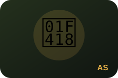
African savanna elephant
Loxodonta africanaBehavior to anticipate
Trunk greetings, dust bathing, mud spraying, calf protection, ear spreading and herd crossings.
Anticipation cue: A trunk gathering soil or water usually precedes a dust or mud throw—start the burst early.
🔍 Close-up story
Eyes, trunk texture, tusks, dust clouds and a calf sheltered beneath an adult.
🏞 Environmental story
Baobabs in Tarangire, family groups crossing open plains and backlit dust near water.
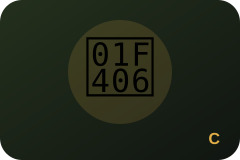
Cheetah
Acinonyx jubatusBehavior to anticipate
Scanning from termite mounds, low stalking posture, tail movement, cub calling and sudden acceleration.
Anticipation cue: Lowered head, fixed gaze and compressed body posture can signal a stalk; leave room ahead of the animal.
🔍 Close-up story
Eyes, tear marks, paws, breathing after a run and mother–cub interaction.
🏞 Environmental story
Small subject in open grassland, termite-mound lookout and long negative space in the direction of travel.
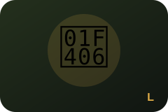
Leopard
Panthera pardusBehavior to anticipate
Tail hanging from branches, grooming, scanning below, descending a tree and repositioning with prey.
Anticipation cue: Watch the tail first—it is often easier to detect than the body in broken shade.
🔍 Close-up story
Eyes through leaves, rosettes, paws on bark and tail detail.
🏞 Environmental story
Use branches as a frame; include the full tree and surrounding habitat rather than only a tight portrait.
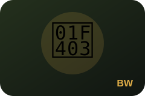
Blue wildebeest
Connochaetes taurinusBehavior to anticipate
Herd bunching, nervous approaches to water, dust, running lines, calves following adults and river-bank hesitation.
Anticipation cue: Migration timing is rainfall-dependent. Treat crossings as possible—not scheduled—and photograph anticipation as well as action.
🔍 Close-up story
Eyes, horns, dust-coated faces, hooves and interaction at the herd edge.
🏞 Environmental story
Layered herds, migration lines, river banks, dust and scale against the plains.
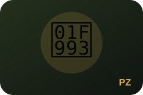
Plains zebra
Equus quaggaBehavior to anticipate
Mutual grooming, stallion disputes, dust rolling, alert ears, foals and mixed herds with wildebeest.
Anticipation cue: Expose for the white stripes in bright sun; interaction often begins with ears pinning back.
🔍 Close-up story
Graphic stripe patterns, eyes, mane, touching muzzles and foal details.
🏞 Environmental story
Repeating patterns across a herd, reflections, dust and zebra as scale within broad grassland.
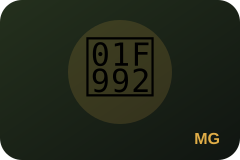
Masai giraffe
Giraffa tippelskirchiBehavior to anticipate
Browsing, necking, drinking, calf following, tongue use and silhouetted walking.
Anticipation cue: When drinking, anticipate the head rising abruptly; keep enough shutter speed for the water and neck movement.
🔍 Close-up story
Eyes, ossicones, tongue, coat patterns and oxpeckers.
🏞 Environmental story
Acacia framing, baobabs, long shadows and multiple giraffes layered at different distances.
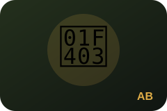
African buffalo
Syncerus cafferBehavior to anticipate
Mud wallowing, herd defense, horn displays, calves and oxpeckers feeding.
Anticipation cue: A herd suddenly facing one direction may be responding to a predator; widen the frame to include the shared reaction.
🔍 Close-up story
Boss of the horns, eyes beneath heavy brows, mud texture and bird–mammal interaction.
🏞 Environmental story
Dense herds, marsh edges, dust and a lone old bull within habitat.
Spotted hyena
Crocuta crocutaBehavior to anticipate
Greeting ceremonies, cub play, scent marking, group movement and interactions with lions or vultures.
Anticipation cue: Do not dismiss distant hyenas; their direction and pace may lead to a carcass or developing predator interaction.
🔍 Close-up story
Rounded ears, powerful jaw, cub expressions and social contact.
🏞 Environmental story
Clan moving across the crater floor, hyena with distant herds and dawn silhouettes.
Eastern black rhinoceros
Diceros bicornis michaeliBehavior to anticipate
Browsing, ears rotating, scent marking and slow movement across open ground.
Anticipation cue: Expect distance. Use stable support, atmospheric patience and realistic expectations.
🔍 Close-up story
Usually not feasible or appropriate—prioritize a record image without pressuring the sighting.
🏞 Environmental story
Use the crater wall, grassland and nearby ungulates to communicate rarity and scale.
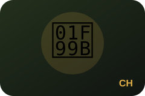
Common hippopotamus
Hippopotamus amphibiusBehavior to anticipate
Yawning, disputes, splashing, surfacing, mother–calf contact and birds using their backs.
Anticipation cue: A rising head and widening mouth may precede a yawn or display—focus before the mouth is fully open.
🔍 Close-up story
Eyes and ears above water, open mouth, droplets and skin texture.
🏞 Environmental story
Pool reflections, multiple heads, shoreline habitat and evening emergence.
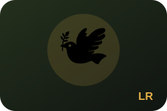
Lilac-breasted roller
Coracias caudatusBehavior to anticipate
Repeated return to a perch, insect sallies, head bobbing, wing spread and takeoff.
Anticipation cue: Pre-focus on the perch and leave space in the direction the bird is facing; many rollers return after catching prey.
🔍 Close-up story
Plumage, eye, bill and prey handling.
🏞 Environmental story
Small colorful bird on an acacia branch with open habitat and clean background.
Secretarybird
Sagittarius serpentariusBehavior to anticipate
Deliberate walking, prey stomping, crest raising, wing balance and pair interaction.
Anticipation cue: Keep the whole bird in frame—its long legs and stride are central to the story.
🔍 Close-up story
Crest feathers, eyelashes, legs and prey-handling action.
🏞 Environmental story
Full-body stride in open grassland, low-angle landscape and long shadow.
Martial eagle
Polemaetus bellicosusBehavior to anticipate
Scanning from a high perch, takeoff, soaring, prey transport and interactions with smaller birds.
Anticipation cue: Watch posture: leaning forward, defecating and wing lifting often precede takeoff.
🔍 Close-up story
Eye, hooked bill, talons and breast spotting.
🏞 Environmental story
Eagle perched above broad savanna or soaring with clouds and habitat beneath.
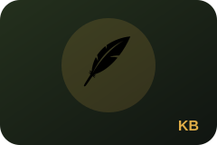
Kori bustard
Ardeotis koriBehavior to anticipate
Slow walking, feeding, neck inflation, wing stretch and courtship display.
Anticipation cue: Avoid framing too tightly; the bird’s scale is clearer when legs and surrounding grass are visible.
🔍 Close-up story
Eye, patterned plumage, neck feathers and display posture.
🏞 Environmental story
Full bird within grassland, low viewpoint and open sky emphasizing its size.
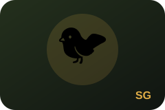
Southern ground hornbill
Bucorvus leadbeateriBehavior to anticipate
Group walking, bill probing, prey capture, calling and interaction between adults and juveniles.
Anticipation cue: Stay with the group; individuals often spread out and then converge around food.
🔍 Close-up story
Red facial skin, eyelashes, bill and prey.
🏞 Environmental story
Family group moving through woodland edge or grass with trees behind.
Lesser flamingo
Phoeniconaias minorBehavior to anticipate
Synchronized feeding, head sweeps, short flights, group movement and reflections.
Anticipation cue: A wider focal length often communicates the spectacle better than isolating one distant bird.
🔍 Close-up story
Curved bill, eye, feather detail and mirrored head shape.
🏞 Environmental story
Pink bands across the lake, crater wall backdrop and abstract patterns.
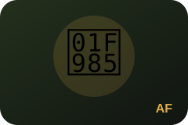
African fish eagle
Icthyophaga vociferBehavior to anticipate
Calling, scanning water, takeoff, fishing attempts and territorial interaction.
Anticipation cue: A forward lean and intense downward gaze can precede launch; raise shutter speed before it moves.
🔍 Close-up story
White head, eye, talons and prey handling.
🏞 Environmental story
Perched bird above water, broad wetland context and flight over reflections.
Zanzibar red colobus
Piliocolobus kirkiiBehavior to anticipate
Feeding, grooming, juveniles playing, canopy travel and group communication.
Anticipation cue: Use quiet movement and avoid blocking travel paths; forest light may require higher ISO.
🔍 Close-up story
Eyes, expressive hands, infant contact and red-black coat detail.
🏞 Environmental story
Include mangrove or forest layers, branches and filtered light to show habitat.
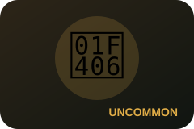
Serval
Leptailurus servalBehavior to anticipate
Tall-grass stalking, intense listening, slow high-stepping movement and explosive vertical pounces on rodents.
Anticipation cue: When it freezes and tilts both ears toward one point, prepare for a pounce.
🔍 Close-up story
Large ears, facial pattern, long legs, spotted coat and prey-focused expression.
🏞 Environmental story
Place the serval small in golden grass or marsh edge to emphasize camouflage and habitat.
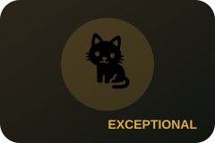
Caracal
Caracal caracalBehavior to anticipate
Low stalking, black ear tufts tracking sound, bird-focused jumps and secretive movement through scrub.
Anticipation cue: A crouch with ears locked forward can precede a leap or short rush.
🔍 Close-up story
Ear tufts, amber eyes, short face and reddish coat.
🏞 Environmental story
Use open scrub, kopjes or grassland edges to show how difficult the animal is to detect.
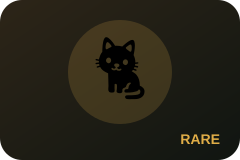
African wildcat
Felis lybicaBehavior to anticipate
Mouse hunting, cautious pauses, tail held low and movement near rocky or grassy cover.
Anticipation cue: Do not dismiss a 'tabby-looking' cat before checking leg length, coat tone and tail pattern.
🔍 Close-up story
Facial stripes, sandy-gray coat, long legs and ringed tail details.
🏞 Environmental story
Include grass, rocks and scale so the resemblance to a domestic cat does not erase the wild setting.
Bat-eared fox
Otocyon megalotisBehavior to anticipate
Large ears scanning for insects, family foraging, digging and pups near dens.
Anticipation cue: Rapid ear swivels and a sudden head tilt often precede digging.
🔍 Close-up story
Oversized ears, dark muzzle, digging paws and family interaction.
🏞 Environmental story
Family group spread across short grass with plenty of negative space.
Aardwolf
Proteles cristataBehavior to anticipate
Termite feeding, solitary trotting, scent marking and raised mane when threatened.
Anticipation cue: Usually encountered briefly; prioritize a clean record frame before changing settings.
🔍 Close-up story
Striped coat, delicate muzzle, mane and ears.
🏞 Environmental story
Low-light grassland frame showing the small hyena relative to open habitat.
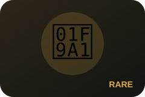
Honey badger
Mellivora capensisBehavior to anticipate
Fast purposeful walking, digging, scent investigation and fearless defensive behavior.
Anticipation cue: They move quickly and seldom pose; start tracking immediately and keep shutter speed high.
🔍 Close-up story
Black-and-silver pattern, claws, nose and determined expression.
🏞 Environmental story
Show scale against open ground, termite mounds or woodland edge.
Striped hyena
Hyaena hyaenaBehavior to anticipate
Solitary scavenging, cautious movement, scent marking and mane raising.
Anticipation cue: Differentiate it from spotted hyena by stripes, mane and more slender build.
🔍 Close-up story
Vertical stripes, pointed ears, sloping back and raised mane.
🏞 Environmental story
A solitary animal crossing dry country tells the story better than an over-tight crop.
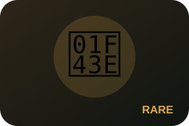
African civet
Civettictis civettaBehavior to anticipate
Slow ground foraging, scent marking and movement along cover edges.
Anticipation cue: A low, cat-like animal with bold black-and-white pattern may be a civet rather than a genet.
🔍 Close-up story
Mask-like face, coarse spotted coat and ringed tail.
🏞 Environmental story
Include woodland edge or night-road habitat; avoid flash that disturbs the animal.
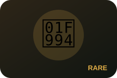
Crested porcupine
Hystrix cristataBehavior to anticipate
Ground foraging, quill raising, family travel and retreat toward burrows.
Anticipation cue: Do not approach for a defensive display; photograph from a respectful distance.
🔍 Close-up story
Quill pattern, face and raised crest.
🏞 Environmental story
Night-road or woodland-edge context showing the full quill silhouette.
Common genet
Genetta genettaBehavior to anticipate
Tree climbing, ground hunting, long-tail balance and slow scanning.
Anticipation cue: A very long ringed tail and low slinking posture separate a genet from a small cat.
🔍 Close-up story
Spotted coat, large eyes, pointed muzzle and ringed tail.
🏞 Environmental story
Use branches, lodge surroundings or woodland layers to show its secretive habitat.
Zorilla (striped polecat)
Ictonyx striatusBehavior to anticipate
Fast ground movement, digging and defensive tail-raising.
Anticipation cue: Keep distance; defensive spray is powerful and the animal should never be pressured.
🔍 Close-up story
Bold black-and-white markings, face and tail.
🏞 Environmental story
Night habitat or open ground with enough space to show its small size.
Responsible wildlife photography
Behavior first, photograph second
Never pressure an animal
Do not ask a driver to crowd, chase, block or separate wildlife. Maintain park rules and follow the professional guide.
Read stress signals
Repeated displacement, alarm calls, defensive posture, flattened ears or interrupted feeding can mean the subject needs more space.
Do not bait or call
Avoid food, playback, artificial calls or any action that changes natural behavior for a photograph.
Respect nesting birds
Keep distance from nests and chicks. Never remove vegetation or reveal a sensitive nest location publicly.
Offline-safe visuals
Species images and commercial licensing
This release uses original offline-safe species icons. They avoid broken links and third-party photo-license risk. A future commercial photo pack should use properly licensed photographs with photographer, source and license attribution stored beside every image.